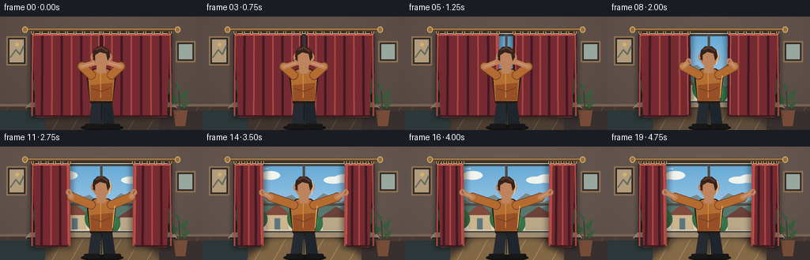
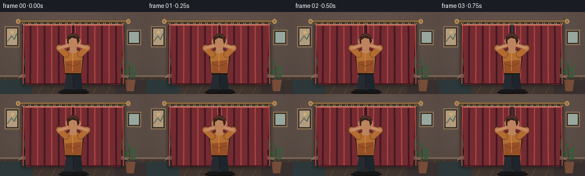

CODING AGENTS AS PIXEL WORLD MODELS
traex/GPT-5.6-Sol · motion_rationality_0053
点击播放 · 原生 RGB 像素
逐轮保存的候选
回放视频、检查图与代码变化。
每份候选均可单独播放。实际图片检查记录在下方工具轨迹中。
候选 01播放与检查图
点击播放 · 原生 RGB 像素

展开代码变化
--- 上一保存版本
+++ 本次保存版本
@@ -0,0 +1,234 @@
+from pathlib import Path
+import math
+import numpy as np
+from PIL import Image, ImageDraw, ImageFilter
+import artifact_io
+
+W,H,N = 256,144,20
+S=4
+
+def sc(v): return int(round(v*S))
+def pts(seq): return [(sc(x),sc(y)) for x,y in seq]
+def smooth(t):
+ t=max(0,min(1,t)); return t*t*(3-2*t)
+def rgba_layer(): return Image.new('RGBA',(W*S,H*S),(0,0,0,0))
+def poly(d, q, fill, outline=None, width=1):
+ d.polygon(pts(q), fill=fill)
+ if outline: d.line(pts(q+[q[0]]),fill=outline,width=sc(width),joint='curve')
+def ell(d,b,fill,outline=None,width=1): d.ellipse(tuple(sc(v) for v in b),fill=fill,outline=outline,width=sc(width))
+def line(d,q,fill,width=1,joint='curve'): d.line(pts(q),fill=fill,width=sc(width),joint=joint)
+
+def gradient_bg(progress):
+ yy,xx=np.mgrid[0:H*S,0:W*S]
+ # warm, shaded interior wall, subtly brightening as daylight enters
+ vig=((xx-W*S*.5)/(W*S*.75))**2+((yy-H*S*.45)/(H*S*.95))**2
+ light=progress*8
+ base=np.zeros((H*S,W*S,3),np.float32)
+ base[:,:,0]=91+light-15*vig+8*(1-yy/(H*S))
+ base[:,:,1]=79+light-15*vig+5*(1-yy/(H*S))
+ base[:,:,2]=72+light-13*vig+4*(1-yy/(H*S))
+ return Image.fromarray(np.uint8(np.clip(base,0,255)),'RGB').convert('RGBA')
+
+def draw_room(im, progress):
+ d=ImageDraw.Draw(im,'RGBA')
+ # side wall molding and floor
+ d.rectangle((0,sc(112),sc(W),sc(H)),fill=(65+int(7*progress),53+int(6*progress),47+int(5*progress),255))
+ d.rectangle((0,sc(111),sc(W),sc(114)),fill=(119,99,83,255))
+ for x in range(-30,280,24):
+ line(d,[(x,144),(x+17,114)],(92,74,62,120),1)
+ # framed pictures
+ d.rounded_rectangle((sc(8),sc(25),sc(34),sc(62)),radius=sc(1),fill=(48,41,38,255),outline=(143,115,85,255),width=sc(2))
+ d.rectangle((sc(12),sc(29),sc(30),sc(58)),fill=(179,157,126,255))
+ line(d,[(13,52),(20,42),(25,48),(30,37)],(98,111,92,255),2)
+ ell(d,(19,33,24,38),(207,177,115,255))
+ d.rounded_rectangle((sc(222),sc(31),sc(247),sc(58)),radius=sc(1),fill=(50,43,39,255),outline=(143,115,85,255),width=sc(2))
+ d.rectangle((sc(226),sc(35),sc(243),sc(54)),fill=(153,168,159,255))
+ # broad window recess and glowing sill
+ d.rectangle((sc(39),sc(17),sc(217),sc(116)),fill=(48,42,40,255))
+ d.rectangle((sc(44),sc(21),sc(212),sc(111)),fill=(224,216,190,255))
+ # outdoor view: sky gradient
+ for y in range(24,91):
+ f=(y-24)/67
+ color=(104+int(64*f),171+int(34*f),214+int(22*f),255)
+ d.rectangle((sc(48),sc(y),sc(208),sc(y+1.1)),fill=color)
+ # distant clouds
+ for b in [(62,34,83,42),(73,31,98,42),(153,38,178,47),(166,35,195,46)]:
+ ell(d,b,(240,244,237,175))
+ # distant neighborhood
+ poly(d,[(48,86),(48,65),(73,55),(94,68),(113,61),(131,76),(153,59),(175,70),(208,58),(208,102)],(119,139,139,255))
+ poly(d,[(48,87),(48,73),(68,63),(85,72),(106,67),(128,83),(151,69),(173,78),(208,66),(208,103)],(87,120,111,255))
+ # rooftops / homes
+ poly(d,[(76,88),(94,72),(113,88)],(130,75,60,255)); d.rectangle((sc(80),sc(87),sc(109),sc(105)),fill=(205,181,143,255))
+ d.rectangle((sc(91),sc(91),sc(98),sc(105)),fill=(94,119,126,255))
+ poly(d,[(147,91),(169,76),(193,91)],(106,67,58,255)); d.rectangle((sc(152),sc(90),sc(188),sc(106)),fill=(187,168,137,255))
+ # trees
+ for x,y,r in [(55,87,14),(69,92,13),(124,91,17),(202,88,15),(140,98,12)]:
+ ell(d,(x-r,y-r,x+r,y+r),(52,104+int((x%3)*6),70,255))
+ ell(d,(x-r*.6,y-r*1.15,x+r*.55,y+r*.35),(66,126,77,235))
+ # window glazing and mullions
+ d.rectangle((sc(46),sc(22),sc(210),sc(110)),outline=(67,69,68,255),width=sc(3))
+ d.rectangle((sc(126.5),sc(23),sc(129.5),sc(109)),fill=(78,78,75,255))
+ d.rectangle((sc(47),sc(72),sc(209),sc(75)),fill=(79,78,74,255))
+ # glints
+ line(d,[(52,28),(83,28)],(255,255,244,100),1)
+ line(d,[(203,28),(203,52)],(255,255,244,90),1)
+ # sill
+ poly(d,[(38,109),(218,109),(224,116),(32,116)],(150+int(20*progress),132+int(18*progress),110+int(16*progress),255))
+ line(d,[(34,116),(222,116)],(52,44,40,255),2)
+ # sunlight cast on floor grows with opening
+ if progress>0.08:
+ a=int(90*progress)
+ glow=rgba_layer(); gd=ImageDraw.Draw(glow,'RGBA')
+ poly(gd,[(86,112),(170,112),(211,144),(49,144)],(242,191,105,a))
+ glow=glow.filter(ImageFilter.GaussianBlur(sc(5)))
+ im.alpha_composite(glow)
+ # low furniture silhouettes
+ d.rounded_rectangle((sc(-12),sc(119),sc(57),sc(148)),radius=sc(8),fill=(44,56,57,255))
+ d.rounded_rectangle((sc(201),sc(120),sc(268),sc(149)),radius=sc(7),fill=(56,48,46,255))
+ # plant right
+ line(d,[(228,125),(226,94)],(52,72,51,255),2)
+ for q in [[(226,105),(214,96),(218,112)],[(227,101),(238,91),(234,108)],[(226,95),(219,83),(228,91)],[(229,111),(242,105),(233,117)]]:
+ poly(d,q,(57,92,58,255))
+ d.polygon(pts([(219,119),(237,119),(234,139),(222,139)]),fill=(119,77,57,255))
+
+def curtain_panel(im, side, inner, progress):
+ d=ImageDraw.Draw(im,'RGBA')
+ outer=41 if side=='L' else 215
+ top=19
+ # panel boundary has a naturally weighted hem and a wavy moving inner edge
+ if side=='L':
+ shape=[(outer,22),(inner,22),(inner-1.2,39),(inner+0.8,57),(inner-1.0,76),(inner+1.4,96),(inner-2,126),(outer+4,128)]
+ else:
+ shape=[(outer,22),(inner,22),(inner+1.2,39),(inner-0.8,57),(inner+1.0,76),(inner-1.4,96),(inner+2,126),(outer-4,128)]
+ poly(d,shape,(117,43,49,255))
+ # warm velour highlight at the moving edge
+ if side=='L': line(d,[(inner-2,24),(inner-1,124)],(188,82,76,180),2)
+ else: line(d,[(inner+2,24),(inner+1,124)],(188,82,76,180),2)
+ # compressed vertical folds. Curves widen toward floor.
+ width=abs(inner-outer)
+ folds=max(4, int(width/11))
+ for k in range(folds+1):
+ u=k/max(1,folds)
+ x=outer+(inner-outer)*u
+ # alternating ridge/valley, strongest at top-middle
+ if k%2==0:
+ col=(174,70,68,150); lw=2
+ else:
+ col=(67,25,35,155); lw=3
+ bow=(u-.5)*(1.5 if side=='L' else -1.5)
+ line(d,[(x,23),(x+bow*.25,54),(x+bow*.6,91),(x+bow,126)],col,lw)
+ # fabric top header and hem
+ if side=='L':
+ line(d,[(outer,23),(inner,23)],(197,88,79,210),2)
+ line(d,[(outer+4,126),(inner-2,126)],(66,24,31,220),2)
+ else:
+ line(d,[(inner,23),(outer,23)],(197,88,79,210),2)
+ line(d,[(inner+2,126),(outer-4,126)],(66,24,31,220),2)
+ # rod rings, which converge as the cloth is pulled sideways
+ for k in range(folds+2):
+ u=k/(folds+1)
+ x=outer+(inner-outer)*u
+ ell(d,(x-1.8,16.7,x+1.8,22.8),(54,43,37,255),outline=(203,163,104,255),width=1)
+
+def draw_curtains(im,left_inner,right_inner,progress):
+ # soft cloth shadow cast into the room/window
+ sh=rgba_layer(); sd=ImageDraw.Draw(sh,'RGBA')
+ sd.rectangle((sc(37),sc(21),sc(left_inner+5),sc(130)),fill=(0,0,0,85))
+ sd.rectangle((sc(right_inner-5),sc(21),sc(219),sc(130)),fill=(0,0,0,85))
+ sh=sh.filter(ImageFilter.GaussianBlur(sc(3))); im.alpha_composite(sh)
+ curtain_panel(im,'L',left_inner,progress)
+ curtain_panel(im,'R',right_inner,progress)
+ d=ImageDraw.Draw(im,'RGBA')
+ # brass rod and finials always on top
+ line(d,[(33,16.5),(223,16.5)],(91,66,42,255),4)
+ line(d,[(33,15.7),(223,15.7)],(208,161,92,255),1)
+ ell(d,(28,12.5,35,20.5),(153,112,63,255),outline=(224,183,112,255))
+ ell(d,(221,12.5,228,20.5),(153,112,63,255),outline=(224,183,112,255))
+
+def capsule(draw,a,b,r,fill,outline=None):
+ # thick line with circular caps
+ line(draw,[a,b],fill,2*r)
+ ell(draw,(a[0]-r,a[1]-r,a[0]+r,a[1]+r),fill)
+ ell(draw,(b[0]-r,b[1]-r,b[0]+r,b[1]+r),fill)
+ if outline:
+ line(draw,[a,b],outline,1)
+
+def draw_person(im, left_hand, right_hand, progress, frame):
+ d=ImageDraw.Draw(im,'RGBA')
+ bob=0.35*math.sin(frame*.45)
+ # Ground shadow
+ ell(d,(102,137,156,145),(18,18,18,95))
+ # legs, subtle weight shift as pull completes
+ shift=progress*1.2
+ poly(d,[(116,105),(128,105),(127-shift,139),(112-shift,139)],(37,43,49,255))
+ poly(d,[(128,105),(141,104),(145+shift,139),(130+shift,139)],(31,37,44,255))
+ line(d,[(128,108),(128,136)],(19,24,29,180),1)
+ d.rounded_rectangle((sc(107-shift),sc(136),sc(128-shift),sc(142)),radius=sc(2),fill=(24,24,25,255))
+ d.rounded_rectangle((sc(130+shift),sc(136),sc(152+shift),sc(142)),radius=sc(2),fill=(23,23,24,255))
+ # body shadow behind arms
+ poly(d,[(109,72+bob),(119,66+bob),(137,66+bob),(147,73+bob),(142,110),(114,110)],(35,27,22,120))
+ # mustard shirt torso, slightly twisted / wrinkled
+ poly(d,[(111,72+bob),(120,67+bob),(136,67+bob),(145,73+bob),(142,107),(114,107)],(180,111,51,255))
+ poly(d,[(114,87),(142,84),(142,106),(115,107)],(151,80,39,165))
+ line(d,[(127,72),(127,103)],(218,143,67,100),1)
+ line(d,[(116,91),(128,95),(140,90)],(112,59,35,120),1)
+ # arms: upper sleeve segments and exposed forearms. Elbows track outward naturally
+ ls=(115,74+bob); rs=(141,74+bob)
+ le=(104-(128-left_hand[0])*0.34, 63+bob+progress*1.0)
+ re=(152+(right_hand[0]-128)*0.34,63+bob+progress*1.0)
+ # arm shadows
+ capsule(d,ls,le,5.8,(105,60,36,130)); capsule(d,rs,re,5.8,(105,60,36,130))
+ capsule(d,ls,le,5.0,(181,108,49,255)); capsule(d,rs,re,5.0,(181,108,49,255))
+ # forearms skin
+ skin=(190,132,93,255); skin_hi=(221,164,119,255)
+ capsule(d,le,left_hand,3.3,skin)
+ capsule(d,re,right_hand,3.3,skin)
+ line(d,[le,left_hand],skin_hi,1)
+ line(d,[re,right_hand],skin_hi,1)
+ # gripping hands, fingers turn around fabric
+ ell(d,(left_hand[0]-4,left_hand[1]-4,left_hand[0]+3.2,left_hand[1]+4),skin)
+ ell(d,(right_hand[0]-3.2,right_hand[1]-4,right_hand[0]+4,right_hand[1]+4),skin)
+ line(d,[(left_hand[0]-1,left_hand[1]-2),(left_hand[0]+1,left_hand[1]+2)],(122,77,58,190),1)
+ line(d,[(right_hand[0]+1,right_hand[1]-2),(right_hand[0]-1,right_hand[1]+2)],(122,77,58,190),1)
+ # neck and head viewed from behind
+ d.rounded_rectangle((sc(122),sc(57+bob),sc(134),sc(72+bob)),radius=sc(3),fill=skin)
+ ell(d,(116.5,38+bob,139.5,64+bob),skin)
+ # ears
+ ell(d,(114.8,47+bob,119.7,56+bob),skin); ell(d,(136.3,47+bob,141.2,56+bob),skin)
+ # hair mass + neck wisps
+ poly(d,[(117,50+bob),(118,43+bob),(123,38+bob),(132,38+bob),(138,43+bob),(139,51+bob),(136,56+bob),(134,47+bob),(126,45+bob),(120,49+bob),(120,57+bob)],(53,35,29,255))
+ line(d,[(121,42+bob),(128,39+bob),(136,44+bob)],(93,60,42,180),2)
+ line(d,[(119,49+bob),(118,55+bob)],(48,31,27,255),2)
+ # rim light strengthens when open
+ if progress>.2:
+ line(d,[(138,43+bob),(140,51+bob),(137,61+bob)],(250,208,145,int(170*progress)),1)
+ line(d,[(145,75),(142,103)],(245,190,105,int(120*progress)),1)
+
+def make_frame(i):
+ t=i/(N-1)
+ # tiny anticipation, decisive pull, then settle at fully open
+ p=smooth((t-0.06)/0.78)
+ if t>.84:
+ p=1-0.012*math.sin((t-.84)/.16*math.pi)
+ # asymmetric centimeter-scale cloth motion avoids mechanical mirroring
+ left=127.0-(54.0*p) + (0.4*math.sin(i*.8) if p>.1 and p<.95 else 0)
+ right=129.0+(54.0*p) + (0.35*math.sin(i*.8+.7) if p>.1 and p<.95 else 0)
+ im=gradient_bg(p)
+ draw_room(im,p)
+ draw_curtains(im,left,right,p)
+ # hands are locked to the moving leading curtain edges
+ hand_y=56.5 + 1.5*p + .25*math.sin(i*.6)
+ draw_person(im,(left-.2,hand_y),(right+.2,hand_y),p,i)
+ # final soft cinematic shading / slight grain, stable spatial pattern
+ arr=np.asarray(im.convert('RGB').resize((W,H),Image.Resampling.LANCZOS)).astype(np.int16)
+ yy,xx=np.mgrid[0:H,0:W]
+ grain=((xx*17+yy*29)%11-5)*0.35
+ arr=np.clip(arr+grain[:,:,None],0,255).astype(np.uint8)
+ return arr
+
+def main():
+ frames=np.stack([make_frame(i) for i in range(N)])
+ artifact_io.save(frames,Path(__file__).resolve().parent)
+ print('saved',frames.shape,frames.dtype)
+
+if __name__=='__main__': main()
可观测工具轨迹
实际执行的命令与返回图片。
命令 1exit 0
/bin/bash -lc "cat prompt.txt && printf '\\n---RULES---\\n' && cat GENERATION_RULES.md && printf '\\n---SPEC---\\n' && cat task_spec.json"
命令 2exit 1
/bin/bash -lc "find . -maxdepth 2 -type f -printf '%p\\n' | sort && printf '\\nTOOLS\\n' && command -v ffmpeg && command -v python3 && python3 - <<'PY' import importlib.util for m in ['cv2','PIL','numpy','imageio','cairo','moviepy']: print(m, bool(importlib.util.find_spec(m))) PY"
命令 3exit 0
/bin/bash -lc 'cat artifact_io.py'
命令 4exit 0
/bin/bash -lc 'for x in ffmpeg python3; do printf "$x "; command -v $x || true; done; python3 - <<'"'PY' import importlib.util for m in ['cv2','PIL','numpy','imageio','cairo','moviepy']: print(m, bool(importlib.util.find_spec(m))) PY"
命令 5exit 0
/bin/bash -lc "cat > generate.py <<'PY'
from pathlib import Path
import math
import numpy as np
from PIL import Image, ImageDraw, ImageFilter
import artifact_io
W,H,N = 256,144,20
S=4
def sc(v): return int(round(v*S))
def pts(seq): return [(sc(x),sc(y)) for x,y in seq]
def smooth(t):
t=max(0,min(1,t)); return t*t*(3-2*t)
def rgba_layer(): return Image.new('RGBA',(W*S,H*S),(0,0,0,0))
def poly(d, q, fill, outline=None, width=1):
d.polygon(pts(q), fill=fill)
if outline: d.line(pts(q+[q[0]]),fill=outline,width=sc(width),joint='curve')
def ell(d,b,fill,outline=None,width=1): d.ellipse(tuple(sc(v) for v in b),fill=fill,outline=outline,width=sc(width))
def line(d,q,fill,width=1,joint='curve'): d.line(pts(q),fill=fill,width=sc(width),joint=joint)
def gradient_bg(progress):
yy,xx=np.mgrid[0:H*S,0:W*S]
# warm, shaded interior wall, subtly brightening as daylight enters
vig=((xx-W*S*.5)/(W*S*.75))**2+((yy-H*S*.45)/(H*S*.95))**2
light=progress*8
base=np.zeros((H*S,W*S,3),np.float32)
base[:,:,0]=91+light-15*vig+8*(1-yy/(H*S))
base[:,:,1]=79+light-15*vig+5*(1-yy/(H*S))
base[:,:,2]=72+light-13*vig+4*(1-yy/(H*S))
return Image.fromarray(np.uint8(np.clip(base,0,255)),'RGB').convert('RGBA')
def draw_room(im, progress):
d=ImageDraw.Draw(im,'RGBA')
# side wall molding and floor
d.rectangle((0,sc(112),sc(W),sc(H)),fill=(65+int(7*progress),53+int(6*progress),47+int(5*progress),255))
d.rectangle((0,sc(111),sc(W),sc(114)),fill=(119,99,83,255))
for x in range(-30,280,24):
line(d,[(x,144),(x+17,114)],(92,74,62,120),1)
# framed pictures
d.rounded_rectangle((sc(8),sc(25),sc(34),sc(62)),radius=sc(1),fill=(48,41,38,255),outline=(143,115,85,255),width=sc(2))
d.rectangle((sc(12),sc(29),sc(30),sc(58)),fill=(179,157,126,255))
line(d,[(13,52),(20,42),(25,48),(30,37)],(98,111,92,255),2)
ell(d,(19,33,24,38),(207,177,115,255))
d.rounded_rectangle((sc(222),sc(31),sc(247),sc(58)),radius=sc(1),fill=(50,43,39,255),outline=(143,115,85,255),width=sc(2))
d.rectangle((sc(226),sc(35),sc(243),sc(54)),fill=(153,168,159,255))
# broad window recess and glowing sill
d.rectangle((sc(39),sc(17),sc(217),sc(116)),fill=(48,42,40,255))
d.rectangle((sc(44),sc(21),sc(212),sc(111)),fill=(224,216,190,255))
# outdoor view: sky gradient
for y in range(24,91):
f=(y-24)/67
color=(104+int(64*f),171+int(34*f),214+int(22*f),255)
d.rectangle((sc(48),sc(y),sc(208),sc(y+1.1)),fill=color)
# distant clouds
for b in [(62,34,83,42),(73,31,98,42),(153,38,178,47),(166,35,195,46)]:
ell(d,b,(240,244,237,175))
# distant neighborhood
poly(d,[(48,86),(48,65),(73,55),(94,68),(113,61),(131,76),(153,59),(175,70),(208,58),(208,102)],(119,139,139,255))
poly(d,[(48,87),(48,73),(68,63),(85,72),(106,67),(128,83),(151,69),(173,78),(208,66),(208,103)],(87,120,111,255))
# rooftops / homes
poly(d,[(76,88),(94,72),(113,88)],(130,75,60,255)); d.rectangle((sc(80),sc(87),sc(109),sc(105)),fill=(205,181,143,255))
d.rectangle((sc(91),sc(91),sc(98),sc(105)),fill=(94,119,126,255))
poly(d,[(147,91),(169,76),(193,91)],(106,67,58,255)); d.rectangle((sc(152),sc(90),sc(188),sc(106)),fill=(187,168,137,255))
# trees
for x,y,r in [(55,87,14),(69,92,13),(124,91,17),(202,88,15),(140,98,12)]:
ell(d,(x-r,y-r,x+r,y+r),(52,104+int((x%3)*6),70,255))
ell(d,(x-r*.6,y-r*1.15,x+r*.55,y+r*.35),(66,126,77,235))
# window glazing and mullions
d.rectangle((sc(46),sc(22),sc(210),sc(110)),outline=(67,69,68,255),width=sc(3))
d.rectangle((sc(126.5),sc(23),sc(129.5),sc(109)),fill=(78,78,75,255))
d.rectangle((sc(47),sc(72),sc(209),sc(75)),fill=(79,78,74,255))
# glints
line(d,[(52,28),(83,28)],(255,255,244,100),1)
line(d,[(203,28),(203,52)],(255,255,244,90),1)
# sill
poly(d,[(38,109),(218,109),(224,116),(32,116)],(150+int(20*progress),132+int(18*progress),110+int(16*progress),255))
line(d,[(34,116),(222,116)],(52,44,40,255),2)
# sunlight cast on floor grows with opening
if progress>0.08:
a=int(90*progress)
glow=rgba_layer(); gd=ImageDraw.Draw(glow,'RGBA')
poly(gd,[(86,112),(170,112),(211,144),(49,144)],(242,191,105,a))
glow=glow.filter(ImageFilter.GaussianBlur(sc(5)))
im.alpha_composite(glow)
# low furniture silhouettes
d.rounded_rectangle((sc(-12),sc(119),sc(57),sc(148)),radius=sc(8),fill=(44,56,57,255))
d.rounded_rectangle((sc(201),sc(120),sc(268),sc(149)),radius=sc(7),fill=(56,48,46,255))
# plant right
line(d,[(228,125),(226,94)],(52,72,51,255),2)
for q in [[(226,105),(214,96),(218,112)],[(227,101),(238,91),(234,108)],[(226,95),(219,83),(228,91)],[(229,111),(242,105),(233,117)]]:
poly(d,q,(57,92,58,255))
d.polygon(pts([(219,119),(237,119),(234,139),(222,139)]),fill=(119,77,57,255))
def curtain_panel(im, side, inner, progress):
d=ImageDraw.Draw(im,'RGBA')
outer=41 if side=='L' else 215
top=19
# panel boundary has a naturally weighted hem and a wavy moving inner edge
if side=='L':
shape=[(outer,22),(inner,22),(inner-1.2,39),(inner+0.8,57),(inner-1.0,76),(inner+1.4,96),(inner-2,126),(outer+4,128)]
else:
shape=[(outer,22),(inner,22),(inner+1.2,39),(inner-0.8,57),(inner+1.0,76),(inner-1.4,96),(inner+2,126),(outer-4,128)]
poly(d,shape,(117,43,49,255))
# warm velour highlight at the moving edge
if side=='L': line(d,[(inner-2,24),(inner-1,124)],(188,82,76,180),2)
else: line(d,[(inner+2,24),(inner+1,124)],(188,82,76,180),2)
# compressed vertical folds. Curves widen toward floor.
width=abs(inner-outer)
folds=max(4, int(width/11))
for k in range(folds+1):
u=k/max(1,folds)
x=outer+(inner-outer)*u
# alternating ridge/valley, strongest at top-middle
if k%2==0:
col=(174,70,68,150); lw=2
else:
col=(67,25,35,155); lw=3
bow=(u-.5)*(1.5 if side=='L' else -1.5)
line(d,[(x,23),(x+bow*.25,54),(x+bow*.6,91),(x+bow,126)],col,lw)
# fabric top header and hem
if side=='L':
line(d,[(outer,23),(inner,23)],(197,88,79,210),2)
line(d,[(outer+4,126),(inner-2,126)],(66,24,31,220),2)
else:
line(d,[(inner,23),(outer,23)],(197,88,79,210),2)
line(d,[(inner+2,126),(outer-4,126)],(66,24,31,220),2)
# rod rings, which converge as the cloth is pulled sideways
for k in range(folds+2):
u=k/(folds+1)
x=outer+(inner-outer)*u
ell(d,(x-1.8,16.7,x+1.8,22.8),(54,43,37,255),outline=(203,163,104,255),width=1)
def draw_curtains(im,left_inner,right_inner,progress):
# soft cloth shadow cast into the room/window
sh=rgba_layer(); sd=ImageDraw.Draw(sh,'RGBA')
sd.rectangle((sc(37),sc(21),sc(left_inner+5),sc(130)),fill=(0,0,0,85))
sd.rectangle((sc(right_inner-5),sc(21),sc(219),sc(130)),fill=(0,0,0,85))
sh=sh.filter(ImageFilter.GaussianBlur(sc(3))); im.alpha_composite(sh)
curtain_panel(im,'L',left_inner,progress)
curtain_panel(im,'R',right_inner,progress)
d=ImageDraw.Draw(im,'RGBA')
# brass rod and finials always on top
line(d,[(33,16.5),(223,16.5)],(91,66,42,255),4)
line(d,[(33,15.7),(223,15.7)],(208,161,92,255),1)
ell(d,(28,12.5,35,20.5),(153,112,63,255),outline=(224,183,112,255))
ell(d,(221,12.5,228,20.5),(153,112,63,255),outline=(224,183,112,255))
def capsule(draw,a,b,r,fill,outline=None):
# thick line with circular caps
line(draw,[a,b],fill,2*r)
ell(draw,(a[0]-r,a[1]-r,a[0]+r,a[1]+r),fill)
ell(draw,(b[0]-r,b[1]-r,b[0]+r,b[1]+r),fill)
if outline:
line(draw,[a,b],outline,1)
def draw_person(im, left_hand, right_hand, progress, frame):
d=ImageDraw.Draw(im,'RGBA')
bob=0.35*math.sin(frame*.45)
# Ground shadow
ell(d,(102,137,156,145),(18,18,18,95))
# legs, subtle weight shift as pull completes
shift=progress*1.2
poly(d,[(116,105),(128,105),(127-shift,139),(112-shift,139)],(37,43,49,255))
poly(d,[(128,105),(141,104),(145+shift,139),(130+shift,139)],(31,37,44,255))
line(d,[(128,108),(128,136)],(19,24,29,180),1)
d.rounded_rectangle((sc(107-shift),sc(136),sc(128-shift),sc(142)),radius=sc(2),fill=(24,24,25,255))
d.rounded_rectangle((sc(130+shift),sc(136),sc(152+shift),sc(142)),radius=sc(2),fill=(23,23,24,255))
# body shadow behind arms
poly(d,[(109,72+bob),(119,66+bob),(137,66+bob),(147,73+bob),(142,110),(114,110)],(35,27,22,120))
# mustard shirt torso, slightly twisted / wrinkled
poly(d,[(111,72+bob),(120,67+bob),(136,67+bob),(145,73+bob),(142,107),(114,107)],(180,111,51,255))
poly(d,[(114,87),(142,84),(142,106),(115,107)],(151,80,39,165))
line(d,[(127,72),(127,103)],(218,143,67,100),1)
line(d,[(116,91),(128,95),(140,90)],(112,59,35,120),1)
# arms: upper sleeve segments and exposed forearms. Elbows track outward naturally
ls=(115,74+bob); rs=(141,74+bob)
le=(104-(128-left_hand[0])*0.34, 63+bob+progress*1.0)
re=(152+(right_hand[0]-128)*0.34,63+bob+progress*1.0)
# arm shadows
capsule(d,ls,le,5.8,(105,60,36,130)); capsule(d,rs,re,5.8,(105,60,36,130))
capsule(d,ls,le,5.0,(181,108,49,255)); capsule(d,rs,re,5.0,(181,108,49,255))
# forearms skin
skin=(190,132,93,255); skin_hi=(221,164,119,255)
capsule(d,le,left_hand,3.3,skin)
capsule(d,re,right_hand,3.3,skin)
line(d,[le,left_hand],skin_hi,1)
line(d,[re,right_hand],skin_hi,1)
# gripping hands, fingers turn around fabric
ell(d,(left_hand[0]-4,left_hand[1]-4,left_hand[0]+3.2,left_hand[1]+4),skin)
ell(d,(right_hand[0]-3.2,right_hand[1]-4,right_hand[0]+4,right_hand[1]+4),skin)
line(d,[(left_hand[0]-1,left_hand[1]-2),(left_hand[0]+1,left_hand[1]+2)],(122,77,58,190),1)
line(d,[(right_hand[0]+1,right_hand[1]-2),(right_hand[0]-1,right_hand[1]+2)],(122,77,58,190),1)
# neck and head viewed from behind
d.rounded_rectangle((sc(122),sc(57+bob),sc(134),sc(72+bob)),radius=sc(3),fill=skin)
ell(d,(116.5,38+bob,139.5,64+bob),skin)
# ears
ell(d,(114.8,47+bob,119.7,56+bob),skin); ell(d,(136.3,47+bob,141.2,56+bob),skin)
# hair mass + neck wisps
poly(d,[(117,50+bob),(118,43+bob),(123,38+bob),(132,38+bob),(138,43+bob),(139,51+bob),(136,56+bob),(134,47+bob),(126,45+bob),(120,49+bob),(120,57+bob)],(53,35,29,255))
line(d,[(121,42+bob),(128,39+bob),(136,44+bob)],(93,60,42,180),2)
line(d,[(119,49+bob),(118,55+bob)],(48,31,27,255),2)
# rim light strengthens when open
if progress>.2:
line(d,[(138,43+bob),(140,51+bob),(137,61+bob)],(250,208,145,int(170*progress)),1)
line(d,[(145,75),(142,103)],(245,190,105,int(120*progress)),1)
def make_frame(i):
t=i/(N-1)
# tiny anticipation, decisive pull, then settle at fully open
p=smooth((t-0.06)/0.78)
if t>.84:
p=1-0.012*math.sin((t-.84)/.16*math.pi)
# asymmetric centimeter-scale cloth motion avoids mechanical mirroring
left=127.0-(54.0*p) + (0.4*math.sin(i*.8) if p>.1 and p<.95 else 0)
right=129.0+(54.0*p) + (0.35*math.sin(i*.8+.7) if p>.1 and p<.95 else 0)
im=gradient_bg(p)
draw_room(im,p)
draw_curtains(im,left,right,p)
# hands are locked to the moving leading curtain edges
hand_y=56.5 + 1.5*p + .25*math.sin(i*.6)
draw_person(im,(left-.2,hand_y),(right+.2,hand_y),p,i)
# final soft cinematic shading / slight grain, stable spatial pattern
arr=np.asarray(im.convert('RGB').resize((W,H),Image.Resampling.LANCZOS)).astype(np.int16)
yy,xx=np.mgrid[0:H,0:W]
grain=((xx*17+yy*29)%11-5)*0.35
arr=np.clip(arr+grain[:,:,None],0,255).astype(np.uint8)
return arr
def main():
frames=np.stack([make_frame(i) for i in range(N)])
artifact_io.save(frames,Path(__file__).resolve().parent)
print('saved',frames.shape,frames.dtype)
if __name__=='__main__': main()
PY
python3 generate.py"命令 6exit 0
/bin/bash -lc "ls -lh pixels.npz index.html inspection.png transition_check.png frames/00.png frames/19.png && python3 - <<'PY'
import numpy as np
from PIL import Image
z=np.load('pixels.npz')['pixels']
print('packed tensor',z.shape,z.dtype)
ims=np.stack([np.asarray(Image.open(f'frames/{i:02d}.png')) for i in range(20)])
print('frames',ims.shape,ims.dtype,'temporal mean abs deltas',np.abs(np.diff(ims.astype(float),axis=0)).mean(axis=(1,2,3)).round(2).tolist())
PY"视觉工具实际返回图片 1

视觉工具实际返回图片 2

保存候选 1 份；完成命令 6 次；可验证图片返回 2 张。原始 API 响应与完整日志保留在本地。